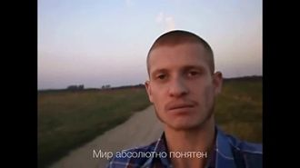
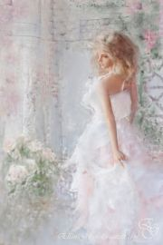
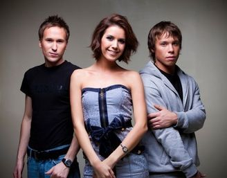

Вспыхнуло солнце заката. На дворе - благодать. Мир абсолютно понятен.Но тебе не понять.
Они знают ответ на вопрос что и как? И у них точно есть отличительный знак.Но не спрятаться в нём, не закрыться в себе.
Далеко-далёко берег твой высокий,Да не ближе берег мойНе достать рукою, но весь мир накрою
Этой радио-волной. Лови и помни!
День провожаюИ всё начинаю сначала я.Вспышки неона,Гудки телефона... И страннаяВечная песня Далёких созвездий
We can never let the word be unspoken.We will never let our loving go come undone.Everything we had is staying unbroken, oh.

Встречай новый день без меня.Встречай новый день без меня.
Развяжи мне руки,Обними за плечи,Отпусти на волю,И забудь меня.
Кулі слова, як на війні. В серце на віліт сказані. Обирай що робити нищити чи творити. Світ не цікавий тому хто. Любить дивитися крізь вікно.
Это история любви, мне слов не говори.Ведь, baby, ты права, в глаза мне посмотри. Мы встречались every day, I miss you every night.
Я стояла на краю земли,Больше точно не могу лететь,И уходят наши корабли,Нам уже, наверно, не успетьЭту песню нам вдвоём напеть
Не говори, что это сон. Все сны закончились давно. Все сны закончились давно. А я смотрю в твои глаза,Они как звезды за окном.
Иголочки, иголочки,И тело моё - полотно,Вышивай!Клеточки, нолики.Слабость моя заодноС твоими руками.
Things haven't been the sameSince you came into my lifeYou found a way to touch my soulAnd I'm never, ever, ever gonna let it go
[Bridge:]
Нам негде встречаться сейчас.Прошу, если можешь, прости.И всё, как назло, против нас,От этого нам не уйти.
Не ищи меня, не зови любяЯ теперь другой, я тебе чужойДаже, если вдруг, я к тебе придуДверь свою закрой, свой храни покой.

Припев:Вдох-выдох и мы опять играем в любимых.Пропадаем и тонем в нежности заливах,Не боясь и не тая этих чувств сильных.
В конце туннеля яркий свет слепой звезды, Подошвы на сухой листве оставят следы, Еще под кожей бъётся пульс и надо жить,
Последний поезд - вагон пустой,Я помашу тебе вслед рукой,Ты растворишься опять в кольце темноты.Черта огней по стеклу бежит,
Вряд ли ты сможешь ответить Кто нас соединил - небо или земля.В день когда ты меня встретил - Я решила, что жизнь начала с нуля.
Стой, подруга, не грусти. Ты пойми меня, прости.Я не знала, я не думала - бывает в жизни так.Он твоим был, знаю я. Ну, к чему теперь слова?
Я верю, я верю в любовь,И в сказочную силу любви.Ведь всё зависит от нас самих.Танцуй!